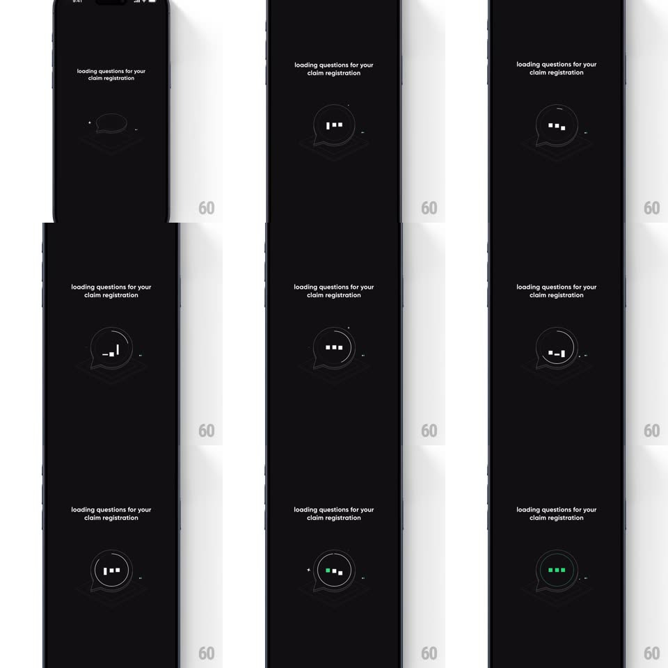

Media
Frame-by-frame

Rebuild this interaction 1:1: CRED's claim-registration loader - on a black screen, an isometric wireframe chat bubble endlessly morphs its three inner marks between dots, equalizer bars, and squares while tiny sparkles drift around the outline.

Rebuild this interaction 1:1: CRED's claim-registration loader - on a black screen, an isometric wireframe chat bubble endlessly morphs its three inner marks between dots, equalizer bars, and squares while tiny sparkles drift around the outline. ## Integration Integration: stack-agnostic spec - springs given as stiffness/damping, timed motions as duration + curve; map every value to your framework and animation library of choice. ## Scene Black screen: small caps line "loading questions for your claim registration" top-center; a large isometric wireframe speech bubble centered, drawn in thin gray lines with a 3D extruded look; inside it three small white marks; tiny plus-sign sparkles at the outline's corners. ## Motion spec Pattern: morphing wireframe loader. - The three inner marks cycle shapes every ~900ms: round dots -> vertical equalizer bars (staggered heights, each bar growing 60ms apart) -> solid squares -> back to dots, each morph a shape tween (300ms, ease-in-out). - The marks shift color on some cycles: white -> green -> white (200ms crossfade). - The wireframe bubble slowly breathes (scale 1 <-> 1.03, 2.4s) and its isometric depth lines subtly shift, keeping the 3D feel alive. - Sparkles twinkle at fixed outline points (opacity 0 -> 1 -> 0, 1.2s, offset phases). - On load completion: the marks settle into green dots, the bubble outline brightens once, and the whole loader fades out (250ms). ## Calibration - Everything is line and geometry - no images, no text changes; the serif claim line stays static. - Loop is seamless: last frame matches first. ## Reduced motion Static bubble with three pulsing dots (opacity only). ## Don't miss - The isometric extrusion: the bubble is drawn as a 3D slab, not a flat outline. - The three marks never move position - only their shape, height, and color change.